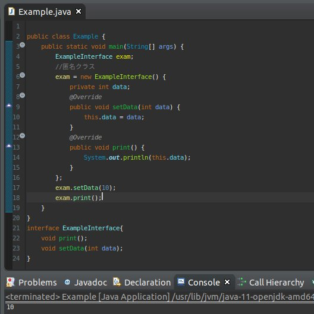
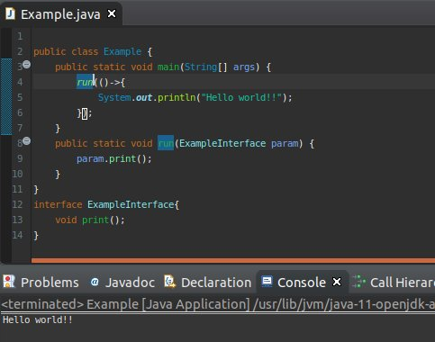
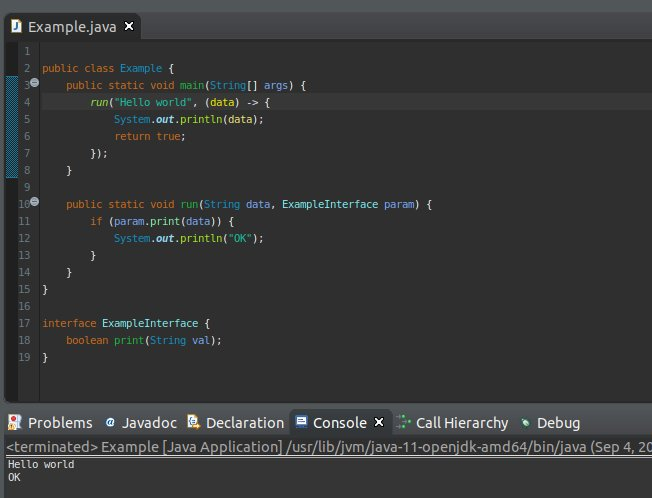
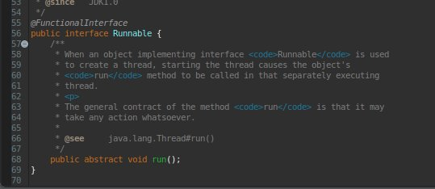
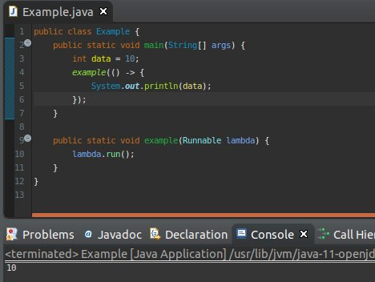

[Java] 匿名クラス、そしてラムダ式(Lambda expression)
こんにちは。明月です。
このページは匿名クラスとラムダ式に関して調べてみました。
匿名クラスとは言うとおりにクラス名がないことを言います。クラス名がないならどのように実装するかと思いますが。
簡単に説明するとインタフェースの指示子で別に実装されたクラスではなく、直接に「new」キーワードだけ使ってクラスを宣言する方法だと思われます。
説明が難しいですね。

上の例をみれば、インタフェース「ExampleInterface」を実装しました。
「main」関数で指示子「exam」をインタフェース「ExampleInterface」で宣言しました。そうすると基本的に我々の知識だとクラスを割当て使いますね。
でも、実装したクラスではなく、「new インタフェース名」で宣言して「Override」でクラスを継承しますね。
すなわち、別にクラスを作ることではなく、直接にクラスを作ることです。
下で「setData」で「10」の値を入れて、「print」関数で出力しました。普通のクラスと使う方法が同じですね。
匿名クラスは普通のクラスと別に差異がないですね。別に普通のクラスを宣言して使ってもいいと思いますが、なんで匿名クラスを使うかと言えば匿名クラスはラムダ式と関係があります。
我々が一回用のため、一つ一つクラスをすべて宣言するとプロジェクトサイズが大きくなりますね。
ラムダ式とはクラス名とメソッド名を省略して一つのメソッド式で表現した文法といいます。
簡単にいうと匿名クラスでメソッド名まで省略したいということですね。

上の例を見れば、「ExampleInterface」のインタフェースに「print」の関数がありますね。
それを「run」関数でパラメータとしてインタフェースを受けています。
「main」関数で「run」を呼出しますが、ラムダ式( () -> { } )でデータを渡します。
ラムダ式の条件はインタフェースの中で一つのメソッドの時に使われますが、もしメソッドが2つ以上ならラムダ式を使えません。
ラムダ式は上の例みたいに「void」だけではないです。

上の例みたいに、パラメータ設定も可能だし、リターン値設定も可能です。
ラムダ式の条件ではインタフェースで一つのメソッドがある時に使うことですが、その条件せいでよく使うインタフェースがあります。
それは「Runnable」ですね。

上のイメージをみれば、インタフェースで一つのメソッドの条件があうし、パラメータとリターンの値が「void」ですね。それだけではなく、ラムダ式の概念でクロージャ機能があります。
クロージャ機能は変数がラムダ式外で宣言した変数をラムダ式内で使えることができるのでです。

- [Java] Java servletでインスタンスを初期する方法2019/10/17 07:15:48
- [Java] Spring web frameworkで発生する文字化けのEncoding設定2019/10/16 07:32:55
- [Java] Web Spring frameworkでfilter設定2019/10/15 20:12:35
- [Java] Web serviceのweb.xmlでエラーページ設定2019/10/14 20:13:44
- [Java] JPAのDAOをFactoryパターンで管理する方法2019/10/13 22:55:52
- [Java] JPAのSpring frameworkで依存性注入する方法2019/10/13 00:40:08
- [Java] JPAでDAOを生成する方法2019/10/11 07:30:14
- [Java] JPAでトランザクションの使用方法とオブサーバーパターンで共通トランザクション関数を作り方2019/10/10 07:29:43
- [Java] JPAのQuery を作り方2019/10/09 07:34:08
- [Java] JPAのEntityクラス設定(Cascade, fetch)2019/10/08 07:43:33
- [Java] JPAでpersistance.xml設定とentityクラス設定(@GeneratedValue設定)2019/10/07 07:38:13
- [Java] EclipseでJPAフレームワーク設定する方法2019/10/04 19:24:43
- [Java] Web spring frameworkのJSPで使う言語 JSTL - XML2019/10/03 20:02:06
- [Java] Web spring frameworkのJSPで使う言語 JSTL - 関数、データベース2019/10/02 21:00:22
- [Java] Web spring frameworkのJSPで使う言語 JSTL - コアー、フォーマッティング2019/10/01 21:48:08
- [CakePHP] Cakeフレームワークでデータベースに接続する時に使うQuery式とEntityクラス、Tableクラス、ResultSet2020/02/17 08:16:23
- [CakePHP] データベース(MariaDB(Mysql))を接続する方法2020/02/14 03:00:00
- [PHP] namespaceとuse2020/02/13 03:00:00
- [CakePHP] RequestとResponseに関して2020/02/12 03:00:02
- [CakePHP] PHPのCakeからAjax要請がある時、jsonタイプ(json_encode関数)でResponseする方法とControllerでViewを選択する方法2020/02/08 03:00:00
- [CakePHP] MVCフレームワークのCakeをインストールする方法2020/02/07 03:00:02
- [PHP] 自動require及びincludeをする方法(spl_autoload_register)2020/02/05 03:00:00
- [PHP] 匿名関数(ラムダ式)とクロージャ(closure)2020/02/04 03:00:00
- [PHP] PHPのコーディング領域とデザイン領域を分離するテンプレートライブラリ Smarty2020/02/02 03:00:00
- [PHP] Reflection - Variable編2020/02/01 03:00:00
- [PHP] Reflection - Method編2020/01/31 03:00:00
- [PHP] Reflection - Class編2020/01/30 03:00:00
- [PHP] エラーページ処理方法(追加: ob_cleanとdie関数使用方法)2020/01/29 03:00:00
- [PHP] 分散設定ファイル(.htaccess) 使用方法2020/01/28 03:00:00
- [PHP] データベース(mariaDB)を連結して使う方法2020/01/24 03:00:00